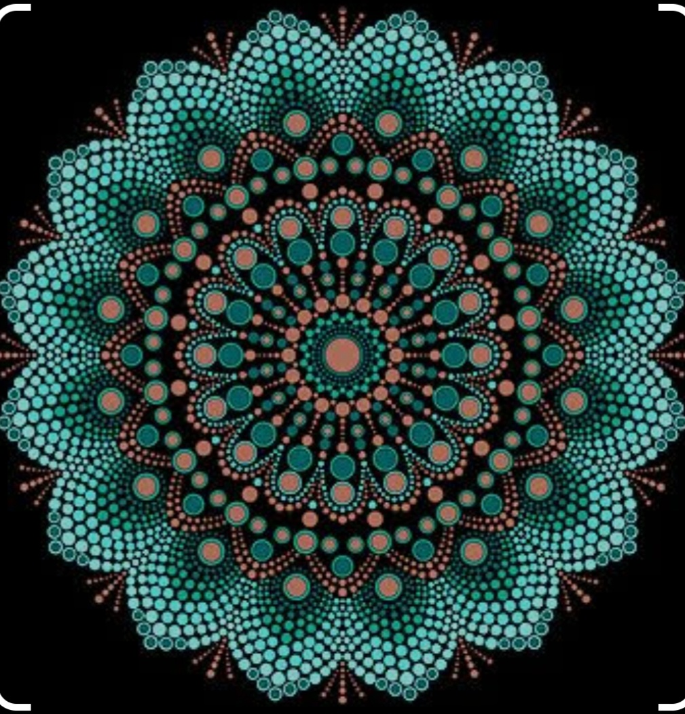

Mandala designs are intricate patterns that originated in ancient cultures, symbolizing unity, harmony, and wholeness. These circular artworks often feature geometric shapes, floral motifs, and repetitive patterns radiating from the center outward. Creating or meditating on mandalas is believed to promote inner peace and spiritual balance. Each line and curve in a mandala holds significance, representing the interconnectedness of all things in the universe. Through their mesmerizing symmetry and symbolism, mandalas serve as a visual journey inward, inviting contemplation and mindfulness.
Mandala designs are like cosmic blueprints, guiding us through a journey of self-discovery and enlightenment. With their intricate symmetry and mesmerizing details, they invite us to explore the depths of our consciousness. Each line and curve holds meaning, representing the interconnectedness of all living beings. Mandalas are not just artworks; they are windows into the soul, reflecting the harmony and balance found within ourselves and the universe. Creating or contemplating mandalas can be a meditative practice, helping us find inner peace and serenity amidst life's chaos.
External Link